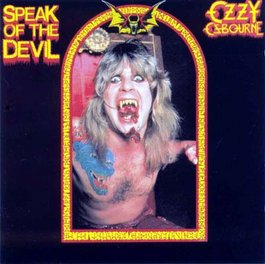

Speak of the Devil (album)
From The Giant: The Definitive Obey Giant Site
From Wikipedia:
Speak of the Devil is a live album by Ozzy Osbourne. It was released on November 27, 1982.
This release was named Talk of the Devil in the UK. This live concert featuring only Black Sabbath covers was recorded at The Ritz in New York on the 26th and 27th of September 1982, and featured Night Ranger guitarist Brad Gillis, who had stepped in for the recently deceased Randy Rhoads. The album was originally intended as a contemporary document of Ozzy's solo live set, but was quickly altered to include entirely Sabbath covers as a riposte to the then current Sabbath's imminent live offering Live Evil with Ozzy's replacement Ronnie James Dio on vocals.
Track listing
1. "Symptom of the Universe" - 5:41
2. "Snowblind" - 4:56
3. "Black Sabbath" - 6:04
4. "Fairies Wear Boots" - 6:33
5. "War Pigs" - 8:35
6. "The Wizard" - 4:43
7. "N.I.B." - 5:35
8. "Sweet Leaf" - 5:55
9. "Never Say Die" - 4:18
10. "Sabbath, Bloody Sabbath" - 5:34
11. "Iron Man"/"Children of the Grave" - 9:12
12. "Paranoid" - 3:10
Personnel
Ozzy Osbourne - Vocals
Brad Gillis - Guitar
Rudy Sarzo - Bass
Tommy Aldridge - Drums
1982's Speak of the Devil appears to have been the inspiration behind, although not direct model of, Shepard's 2001 print Ozzy.
 |
{kind=link}
{kind=link}
© Copyright |
|---|
| This page contains an image or images of drawings, paintings, photographs, prints, or other two-dimensional works of art, for which the copyright is presumably owned by either the artist who produced the image, the person who commissioned the work, or the heirs thereof. It is believed that the use of low-resolution images of works of art for critical commentary on the work in question, the artistic genre or technique of the work of art, or the school to which the artist belongs on the English-language website thegiant.org, hosted on servers in the United States, qualifies as fair use under United States copyright law. |